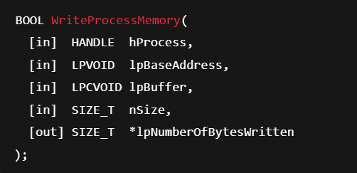
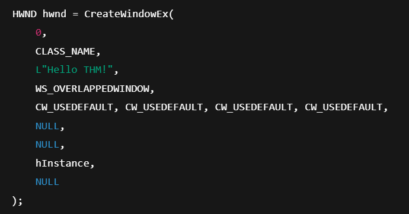
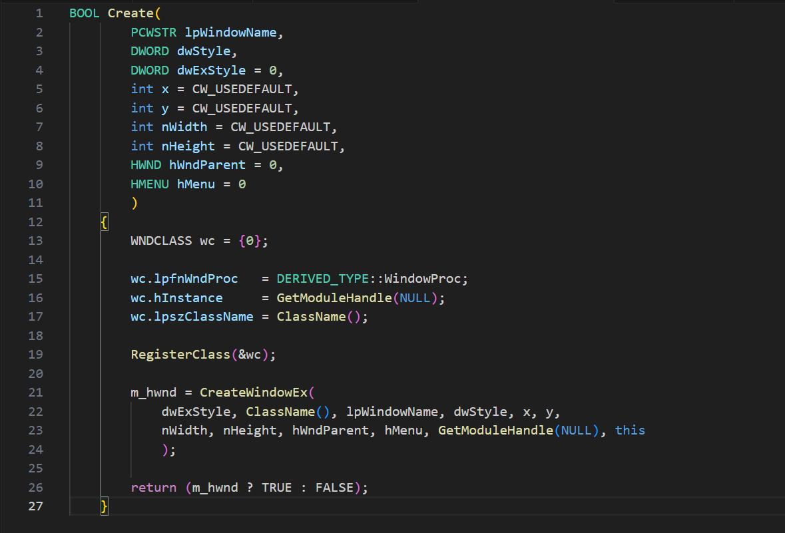
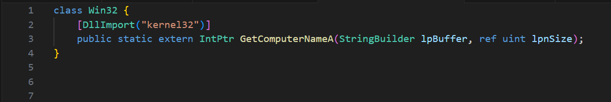
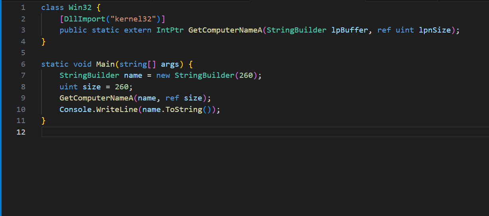
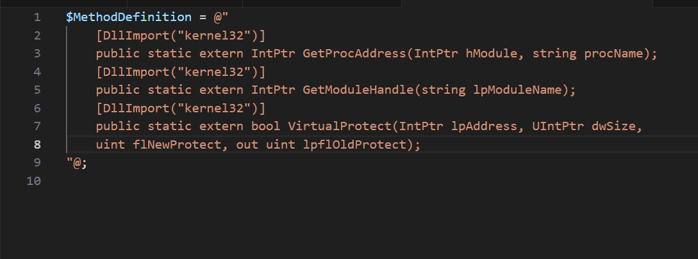

Introduction to Windows API
Subsystem and Hardware InteractionMany programs need to access or modify Windows subsystems or hardware, but are restricted in order to maintain system stability. To bridge this gap, Microsoft introduced the Win32 API, a library that acts as an interface between user-mode applications and the kernel.
Windows enforces access control through two distinct processor modes:
Applications normally run in user mode, where they cannot directly interact with hardware or kernel functions. To do so, they rely on API calls (or system calls) that cross the switching point, allowing information to be passed into kernel mode where it is processed with higher privileges.
A diagrammatic view would show user mode at the top and kernel mode at the bottom, separated by the switching point where system/API calls occur.
When different programming languages interact with the Win32 API, the process may pass through an intermediate runtime. For example, a C# application goes through the CLR (Common Language Runtime) before reaching the API and then making the required system calls.
Windows Internals → deeper explanation of memory managementRuntime Detection Evasion → details on how runtimes can be leveraged or bypassed
Components of the Windows API
The Win32 API, more commonly called the Windows API, is structured as a layered system with several dependent components that organize how programs interact with the operating system. By examining it from a top-down perspective, we can understand how high-level calls are built from lower-level definitions.
API – This is the top layer, a general term that refers to any call within the Win32 API structure.
Header files / Imports – These define which libraries are imported at run-time. Using header files or library imports, the system leverages pointers to obtain the function’s address.
Core DLLs – At the heart of the API are four main DLLs: KERNEL32, USER32, ADVAPI32, and related system libraries. These define kernel and user services not tied to a single subsystem.
Supplemental DLLs – Beyond the core, there are ~36 other DLLs, including NTDLL, COM, and FVEAPI, which control different subsystems of Windows.
Call Structures – These describe the API call itself and the parameters it requires.
API Calls – The actual function calls made within a program, whose addresses are resolved via pointers.
In/Out Parameters – The bottom layer, representing the values passed into or returned from API calls, defining how data flows during execution.
OS Libraries
Each Win32 API call exists in memory and requires a pointer to its location. Because of Address Space Layout Randomization (ASLR), these locations change at runtime, and different approaches are used to resolve them. In unmanaged code such as C or C++, Microsoft provides the windows.h header file, also known as the Windows loader, which automatically handles this process by creating a thunk table that maps function addresses at runtime.
This means developers can simply include the header file and call Win32 functions directly. In managed environments such as C#, the process is handled through P/Invoke (Platform Invoke). P/Invoke allows managed code to call unmanaged Win32 functions by first importing the relevant DLL with the DllImport attribute and then defining an external method with the extern keyword.
Once this mapping is complete, the unmanaged function can be invoked as if it were part of the managed program. In essence, windows.h simplifies direct unmanaged calls, while P/Invoke bridges managed and unmanaged environments, both providing reliable ways to overcome ASLR and access Win32 API functionality.
API Call Structure
API calls are the second main component of the Win32 library and provide the extensibility and flexibility that make the API useful for a wide range of purposes. Most of these calls are well documented in both the Windows API documentation and community resources such as pinvoke.net. To distinguish between different variations,
Microsoft employs specific naming schemes by appending characters to the base function name. The suffix “A” indicates ANSI encoding using an 8-bit character set, “W” indicates Unicode encoding, and “Ex” represents an extended version of the function, often supporting additional in/out parameters. Alongside naming conventions, each API call follows a predefined structure for its input and output parameters. These parameters are documented individually, with details about their purpose, expected input, output behavior, and accepted values.

C API Implementations
Microsoft provides low-level programming languages such as C and C++ with a pre-configured set of libraries to access Win32 API calls. The most important is the windows.h header file, which defines call structures and obtains function pointers automatically. By including this header at the top of a program with #include <windows.h>, developers can immediately make use of the API.
As a first example, we can create a pop-up window titled “Hello THM!” using the CreateWindowExA function. This API call takes a series of input and output parameters, including style definitions, position, dimensions, parent handle, and instance handle.
Here is a sample in C code:

To implement this into a working application, we can register a simple window class and call CreateWindowEx to spawn the blank window.

If this code is successful, it produces a window with a specific title.
.NET and Powershell API Implementations
P/Invoke (Platform Invoke) enables managed code to call unmanaged Win32 API functions by importing DLLs and assigning pointers to their addresses. Because of ASLR, direct memory addresses are unreliable, so P/Invoke provides a structured way to resolve function locations dynamically.
In .NET, this begins by creating a class to hold the API call definition. The DllImport attribute is used to import the required DLL, which contains the desired API function. For example, to call GetComputerNameA from kernel32.dll, we define:

Here, DllImport loads the DLL, and the extern keyword declares the function as an external method. Once defined, the function can be called like any other managed method. A simple program that retrieves the computer name looks like this:

Running this will print the computer name of the current device.
The same syntax can be adapted in PowerShell, though it requires one extra step. Instead of a class, the method definitions are declared as a string containing the DLL imports:

PowerShell then uses Add-Type to create a temporary compiled type in memory with these method definitions:
$Kernel32 = Add-Type -MemberDefinition $MethodDefinition -Name 'Kernel32' -NameSpace 'Win32' -PassThru;
After this step, the imported functions can be invoked using syntax like:
[Win32.Kernel32]::GetProcAddress($hModule, "SomeFunction")
This shows how P/Invoke can bridge managed environments such as .NET or PowerShell with unmanaged Win32 APIs, offering developers and attackers alike a powerful way to extend functionality beyond normal runtime boundaries.
Commonly Abused API Calls
Certain Win32 API calls are frequently leveraged for malicious purposes because of the direct system access they provide. Security researchers and organizations, including SANS and MalAPI.io, have attempted to document these abuse cases, but in practice a handful of calls consistently appear in real-world malware samples.
Some of the most commonly abused API calls include functions for DLL injection, system reconnaissance, and memory manipulation. For example, LoadLibraryA can be used to map a malicious DLL into a process, while GetProcAddress retrieves the address of exported DLL functions, both of which are common steps in process injection. Reconnaissance calls like GetUserNameA, GetComputerNameA, and GetVersionExA allow malware to gather information about the system environment and user context. Other calls, such as GetModuleFileNameA, GetStartupInfoA, and GetModuleHandle, provide insight into process structure and loaded modules. Finally, functions like VirtualProtect are often abused to change memory protections so malicious code can be written and executed in memory.
Together, these API calls form part of the core toolkit for attackers, providing stealthy ways to load payloads, manipulate processes, bypass protections, and extract valuable system details. Understanding their normal use and their malicious applications is critical for both detection and prevention.
Malware Case Study
Case Study 1: Keylogger
Objective
The objective of the keylogger is to monitor and capture keystrokes by setting a low-level keyboard hook inside the process.
Relevant API Calls and Their Role
SetWindowsHookEx – Installs a hook in the Windows message-handling chain, specifically WHKEYBOARDLL (value 13) for keyboard events. This is the keylogger’s core function: it intercepts keystrokes.
UnhookWindowsHookEx – Removes the hook once the program is finished. This is cleanup to avoid crashing or leaving traces.
GetModuleHandle – Retrieves a handle to the current module (process). This is needed to register the hook properly so Windows knows which process/module to attach the hook to.
GetCurrentProcess – Returns a pseudo-handle for the current process. It provides context for the hook setup.
Flow of Execution
The program starts and immediately sets a hook by calling SetHook, which internally uses SetWindowsHookEx.
It passes the process handle (GetModuleHandle(curProcess. ProcessName)) and the hook type (WHKEYBOARDLL).
The program then enters a loop with Application. Run(), meaning it continues running while intercepting keystrokes.
When terminated, it removes the hook with UnhookWindowsHookEx and exits cleanly.
Summary: The keylogger doesn’t show how it records keystrokes (that part is omitted for ethics), but its API usage reveals that it relies on the Windows hook mechanism to silently intercept all keyboard input.
Case Study 2: Shellcode Launcher
Objective
The goal of the shellcode launcher is to inject and execute arbitrary code in the context of the running process.
Relevant API Calls and Their Role
VirtualAlloc – Allocates memory in the virtual address space of the current process with PAGE_EXECUTE_READWRITE permissions, allowing execution of arbitrary code.
Marshal. Copy – Copies the shellcode bytes from the program into the allocated memory.
CreateThread – Starts a new thread with its entry point set to the beginning of the injected shellcode.
WaitForSingleObject – Pauses execution until the created thread finishes running the shellcode.
Flow of Execution
The program allocates space for the shellcode with VirtualAlloc. Memory is reserved and committed, with read, write, and execute permissions. UInt32 funcAddr = VirtualAlloc(0, (UInt32)shellcode. Length, MEM_COMMIT, PAGE_EXECUTE_READWRITE);
The shellcode is copied into that memory using Marshal. Copy.
A new thread is created with CreateThread, pointing directly to the allocated memory region as its start address.
The program waits for the thread to finish with WaitForSingleObject.
The keylogger abuses the Windows message-handling system (SetWindowsHookEx) to spy on user input. The shellcode launcher abuses memory management functions (VirtualAlloc, CreateThread) to run arbitrary code directly in process memory.